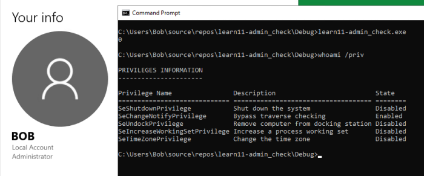
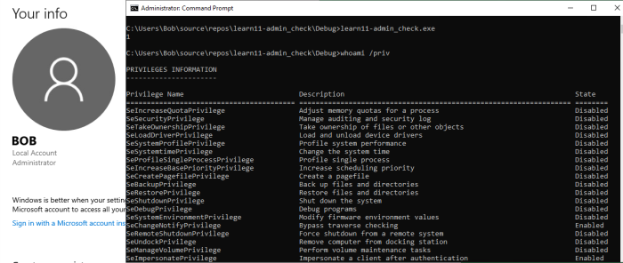

# Check if Administrator
Apparently it's possible to drop privileges if you already have them:
https://stackoverflow.com/a/6419772## IsUserAnAdmin()
https://docs.microsoft.com/en-gb/windows/win32/api/shlobj_core/nf-shlobj_core-isuseranadminFunction is deprecated - might get altered or become unavailable at any point.
IsUserAnAdmin() is a wrapper around
CheckTokenMembership.
MSDN recommendeds to call that function directly to determine Administrator group status rather than calling
IsUserAnAdmin.
MSDN says that
IsUserAnAdmin "tests whether the current user is a member of the Administrator's group", but I think that's wrong.
Because it's a wrapper around CheckTokenMembership, it simply checks if it has Administrator-only tokens enabled. Therefore, this function will only return TRUE if run inside of an Administrator command prompt.
For example,
Bob is an Administrator.
Bob runs a non-Administrator cmd ->
IsUserAnAdmin() returns FALSE.
Bob runs
cmd as Administrator ->
IsUserAnAdmin() returns TRUE because Administrator-only tokens are now available to him.
Code
#include <stdio.h>
#include <Windows.h>
#include <ShlObj.h>
int main()
{
BOOL admin = FALSE;
admin = IsUserAnAdmin();
printf("%d \n", admin);
return 0;
}
Demo
I'm logged in as
Bob - a local Administrator.
admin_check.exe is run under a non-Administrator cmd prompt.
admin_check.exe returns FALSE, we're not an Administrator.
If we check our privileges, they look like a normal user's privileges.
Now we run
admin_check.exe under an Administrator cmd prompt.
admin_check.exe returns TRUE, we're an Administrator.
If we check our privileges, we have Administrator-only privileges now available to us.
## CheckTokenMembership
https://docs.microsoft.com/en-us/windows/win32/api/securitybaseapi/nf-securitybaseapi-checktokenmembershipCode for checking if Administrator is in MSDN example above.
## TOKEN_ELEVATION.TokenIsElevated
Don't fully understand what this code does.
Open token on current process > get token info > query
TokenIsElevated element from
TOKEN_ELEVATION struct, which returns TRUE or FALSE.
Source:
https://stackoverflow.com/a/8196291BOOL IsElevated( ) {
BOOL fRet = FALSE;
HANDLE hToken = NULL;
if( OpenProcessToken( GetCurrentProcess( ),TOKEN_QUERY,&hToken ) ) {
TOKEN_ELEVATION Elevation;
DWORD cbSize = sizeof( TOKEN_ELEVATION );
if( GetTokenInformation( hToken, TokenElevation, &Elevation, sizeof( Elevation ), &cbSize ) ) {
fRet = Elevation.TokenIsElevated;
}
}
if( hToken ) {
CloseHandle( hToken );
}
return fRet;
}
## AccessCheck
https://docs.microsoft.com/en-us/windows/win32/api/securitybaseapi/nf-securitybaseapi-accesscheckHaven't tested.
Apparently you can use it to check if Admin. Source:
https://stackoverflow.com/a/26231282Uses tokens.